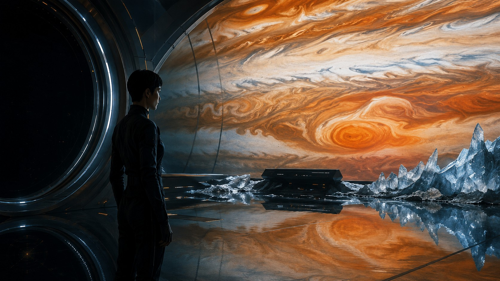

Research-Led Interdisciplinary Workshop
Imagining Future Worlds through Human–AI Co-Creation.
The Workshop
The Human–AI Co-Creation for Science Fiction Filmmaking Workshop is a research-led interdisciplinary initiative bringing together science fiction storytelling, filmmaking, scientific inquiry, and generative AI. Participants collaborate with generative AI tools to develop original concepts, translate scientific ideas into compelling narratives, and iteratively refine their screenplays.
Beyond creative production, it is a platform for investigating new forms of human–AI collaboration, interdisciplinary knowledge integration, and responsible creative practice — fostering dialogue between creative professionals, researchers, scientists, and emerging creators.

People
An interdisciplinary community spanning artificial intelligence, science, film, media, art, and design.
Partners
Our Vision
Science · Cinema · Imagination · Artificial Intelligence